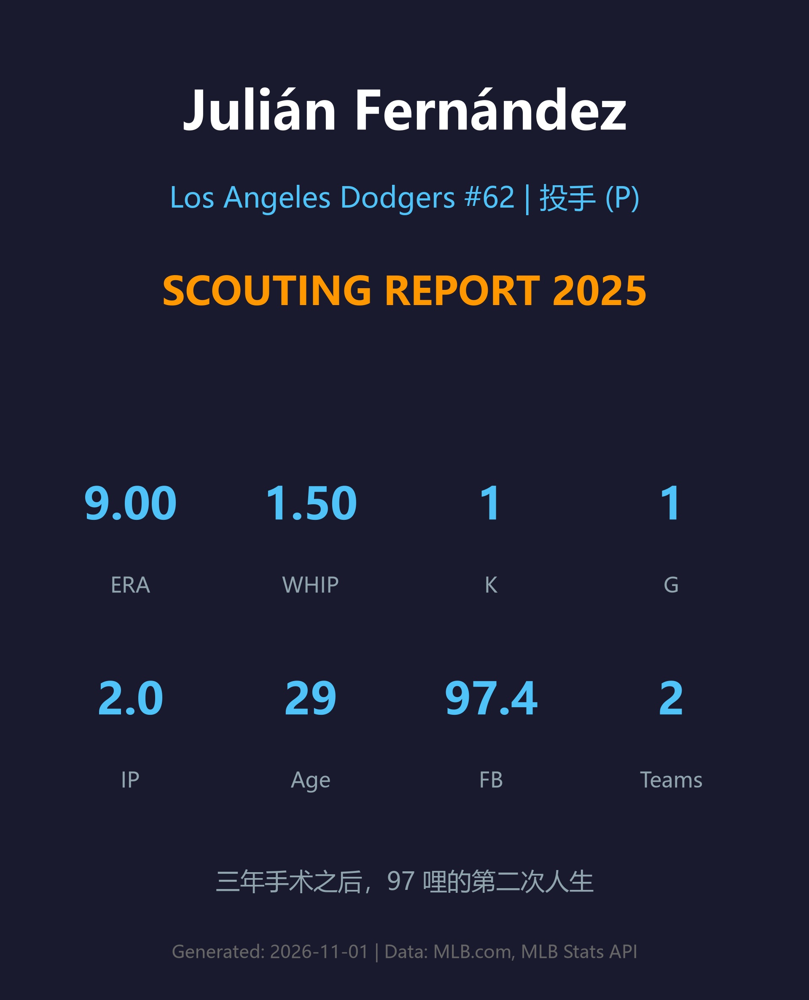
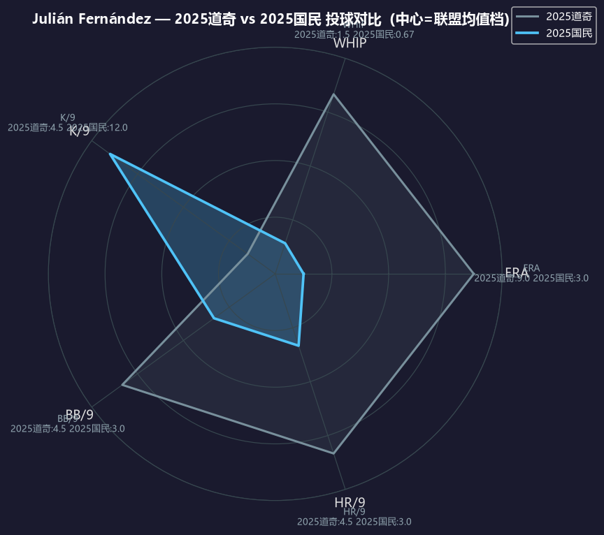
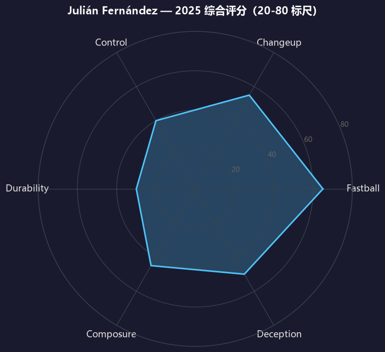

Los Angeles Dodgers #62 | 投手 | 右投 | 三年手术之后，97 哩的第二次人生

Julián Fernández 的 2025 年只有 10 场大联盟出赛，却浓缩了一部完整的体育电影：1 月 6 日与道奇签下小联盟合约（三年手术后的第一张合约）→ 7 月 7 日选入大联盟 → 一场 2 局 → 8 月 15 日被 DFA → 8 月 17 日被国民认领 → 在华盛顿拿下生涯首胜。从博卡奇卡到库尔斯再到道奇与国民，29 岁的他今年投的每一局都是"第二次人生"的注脚。
道奇段的那 2 局（9.00、1 轰、2 安打 1 保送）谈不上成功，但球探报告只对一样东西负责：他的四缝线速球均速 97.4 mph——6'6"、230 磅的骨架配上从小在多米尼加棒球场练出的全身发力，手术后球速不降反升。变速球占比 31.6%、均速 86.2，11 mph 的经典速差，这是教科书级的高速后援模板。
从 2025 年 11 月的视角看，Fernández 是 waiver 线上最有"物理天赋"的名字：97+ mph、6'6" 身高带来的俯视出手角、以及三年手术磨炼出的耐心。国民最后六周给他的信任（3 场 3.00、0.67 WHIP、12.0 K/9、生涯首胜）证明他离"稳定的大联盟后援"只差健康与机会的同时眷顾。
2021 年 9 月 5 日在科罗拉多洛矶登上大联盟——那个以"毁掉投手"闻名的库尔斯主场，成了他职业生涯的第一块投手丘。
手肘韧带重建手术夺走了整整三个赛季。绝大多数人在此期间退役，Fernández 在康复中心把自己重新组装了一遍——这段沉默是他故事里最重的部分。
7 月 7 日道奇选入（时隔 1369 天重返大联盟），8 月 17 日被国民认领后投出 3 场 3.00、0.67 WHIP、12.0 K/9，并拿下大联盟生涯第一胜。
以下为道奇段数据（2025-01-06 小联盟合约签约、2025-07-07 选入大联盟、2025-08-15 DFA、2025-08-17 被国民认领）：

| 赛季 | 球队 | G | ERA | WHIP | IP | SO | BB | HR |
|---|---|---|---|---|---|---|---|---|
| 2021 | COL | 6 | 10.80 | 1.95 | 6.2 | 4 | 4 | 2 |
| 2025 | LAD | 1 | 9.00 | 1.50 | 2.0 | 1 | 1 | 1 |
| 2025 | WAS | 3 | 3.00 | 0.67 | 3.0 | 4 | 1 | 1 |
三行数据三个世界：2021 洛矶的 10.80 是未经打磨的 raw stuff 撞上 MLB；道奇那 2 局是三年手术后第一次站上大联盟丘的紧张标本（36 球仅 23 颗好球）；国民的 3 场才是"真实水平"的首次亮相——0.67 WHIP、12.0 K/9、地面滚飞比 4.0，97 mph 的球速配上终于听话的进垒点。样本都小得可怜，但趋势的方向是从左向右读的。
2025 赛季真实配球数据（MLB Stats API pitchArsenal，道奇+国民汇总）：
绝对核心武器。6'6" 骨架带来的高出手点让这颗速球产生罕见的俯视进垒角——手术后球速不降反升，是身体完全重建成功的最直接证据。
11.2 mph 的教科书速差。国民段它开始真正干扰打者——大量追打出现在这颗球上——还帮他摘下了生涯首胜。，道奇段则还停留在"展示"阶段——两队的差异本质是信心的差异。
Fernández 的职业路径与大多数多米尼加火球手相反：别人从低阶起步，他 2021 年直接在库尔斯球场（全 MLB 对投手最不友好的环境）首秀——6 场 10.80 的数据里至少有一半是主场的锅。随后手肘手术给了他三年强制停赛，2025 年 1 月道奇的小联盟合约是 30 支球队里唯一一份报价。这张合约最终变成：一场大联盟出赛、一次 DFA、一次 waiver 认领、一场生涯首胜——对小联盟合约来说，这是超额回报。
道奇段的问题清晰：36 球 23 好球（.640 好球率）、变速球只敢在领先时丢——这是"怕失误"的投法，结果是两颗安打里含一支全垒打。国民段他换了个人：0.67 WHIP、四球种里变速球占比升到能真正干扰打者的程度，还摘下了生涯首胜。同一个人、同一颗 97.4 mph 的速球，区别只在于国民给了他"投丢也不会死"的心理空间。对后援投手来说，这种空间往往比任何机械调整都值钱。
高出手点投手的巅峰窗口通常比矮个投手长——肩部承受的力臂角度更优，老化曲线更平缓。29 岁的 Fernández 在这个模板上刚刚"开机"：如果 2026 年能投 40 场，他的 ERA 中位数预期在 4 上下；如果能解决变速球的使用信心， ceiling 是第八局。风险同样清晰：TJ 后的第二个完整赛季是复断高发期，他的耐久评分因此必须保守。

97 哩第二次人生的多米尼加巨塔
C+ 级 / waiver 线上的物理天赋彩票
道奇 2025 季后赛夺冠之路：外卡 2-0 红人 → NLDS 3-1 费城人 → NLCS 4-0 酿酒人 → 世界大赛 4-3 多伦多蓝鸟。
Fernández 的 2025 季后赛属于旁观者席——8 月 17 日披上国民球衣的那一刻起，他就与道奇的十月无关了。国民连季后赛门槛都没摸到，他的赛季在华盛顿九月的夕阳里结束。但对一个三年前还在怀疑能否再投球的人来说，"有球队愿意认领"本身就是颁奖礼；首胜那张比赛用球，会放在博卡奇卡的家里最显眼的位置。
Fernández 的 2026 年大概率从国民的春训名单开始——华盛顿正在重建，重建球队最愿意给的就是他这样的"物理天赋+小样本闪光"型投手机会。理想路径：4 月进入牛棚，6 月前投满 25 场，把国民段的 0.67 WHIP 拉长到有意义的样本。如果他做到了，明年冬天他会是市场上最抢手的后援名字之一：97 mph、29 岁、高出手点，这三个标签在任何 GM 的 Excel 里都会自动高亮。
理想剧本：国民牛棚主力，全年 50 场 3.5 ERA， offseason 签两年合约
现实基准：重建队第七八局，在 waiver 线上最后一次证明自己
下行风险：TJ 复断，第三次手术基本等于退役判决
Julián Fernández 来自多米尼加首都圣多明各郊外的博卡奇卡——加勒比海棒球带的核心地带。科罗拉多洛矶在 2021 年 9 月给了他第一张机票，直接把这位 25 岁的高个子右投放进了库尔斯球场的投手丘。首秀年的 10.80 并不出人意料：库尔斯会惩罚每一个还没学会"如何把球压低"的新人，何况他的肘部当时已经在报警。
手肘韧带重建手术随后夺走了 2022-2024 三个完整赛季。三年里，同届的多米尼加投手有的签了百万合约，有的销声匿迹；Fernández 在康复中心的跑步机上一天一天把自己拼回来。2025 年 1 月 6 日，道奇给了他一份小联盟合约——全联盟 30 支球队里唯一的一份。
2025 年 11 月的 Julián Fernández 手里握着：一场道奇的出赛、一次 waiver 认领、三场 3.00 的国民段表现、一张生涯首胜的比赛用球，和一颗依然 97.4 mph 的速球。从博卡奇卡出发绕的这一大圈，现在看起来一点都不亏——对 6'6" 的巨塔来说，天空线才刚刚出现在地平线上。